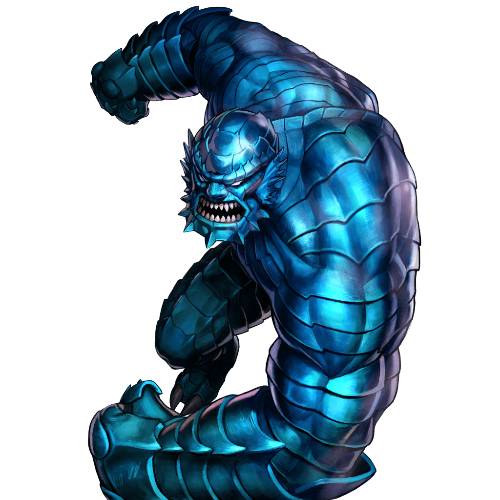

<div class="page-header">
  <h1>Personajes</h1>
  </div>
<div class="row">
  <div class="col-md-3">
    <div class="panel-body">
      
      
    </div>
    <div class="panel-footer">A-Bomb</div>
  </div>
</div>

  <!-- <div class="card mb-3">
    <h3 class="card-header text-center">A-Bomb</h3>
    
    <div class="card-body">
      <p class="card-text">
        Después de World War Hulk, surgió un nuevo Hulk Rojo,​ golpeando
        brutalmente y luego disparando a la Abominación hasta la muerte. Después
        de que esto ocurriera, Jones escapó de una base secreta en Alaska que
        había sido destruida de forma "Hulk". Luego de esto, Hulk Rojo se
        enfrenta a Jones en la Base Gamma, donde se está celebrando Bruce
        Banner. En defensa, Jones inexplicablemente se transforma en una
        criatura que se asemeja a la Abominación, llamándose A-Bomb.
      </p>
    </div>
    <button type="button" class="btn btn-primary  btn-block ">Ver Mas</button>
  </div> -->


